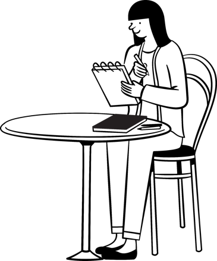
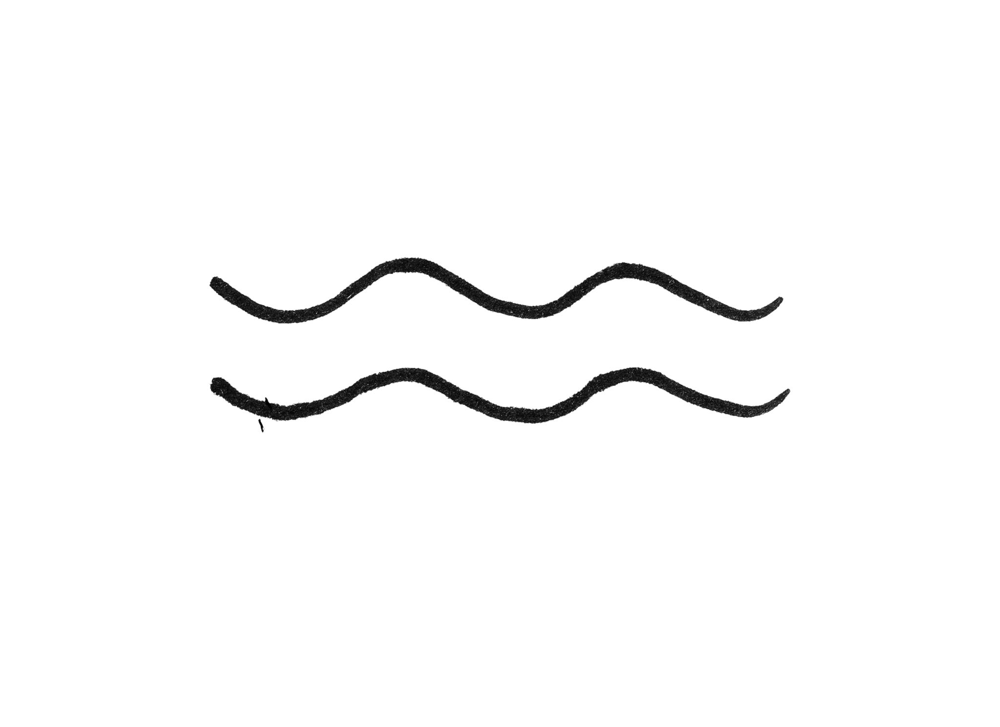
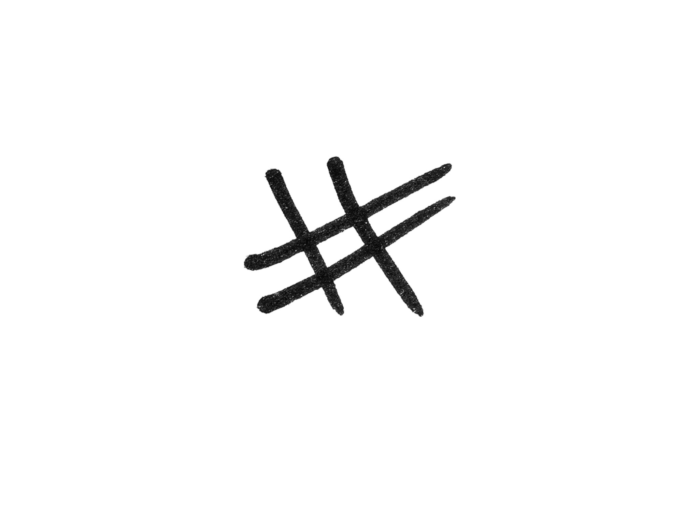
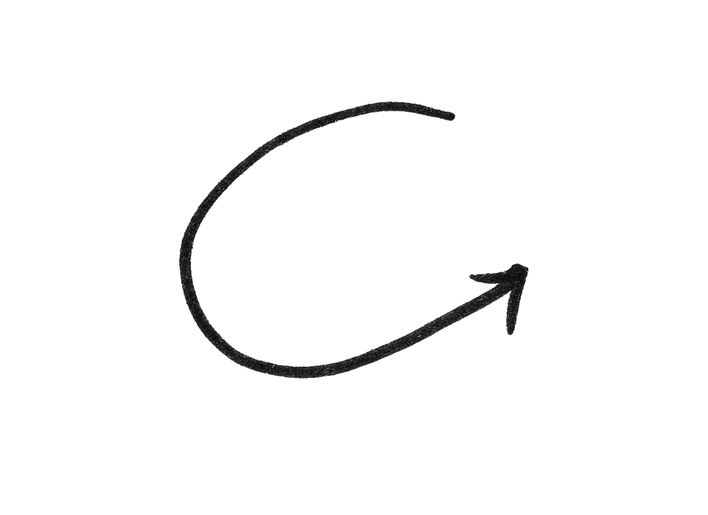
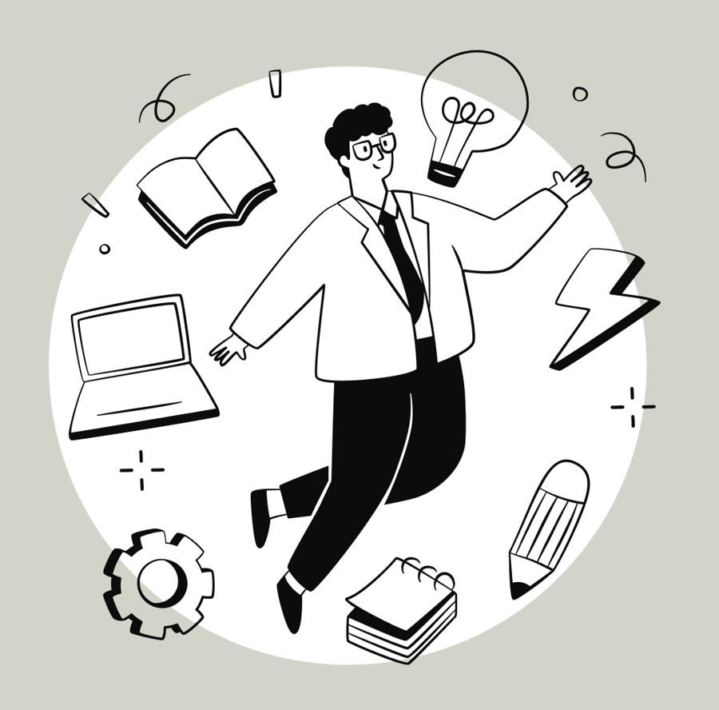
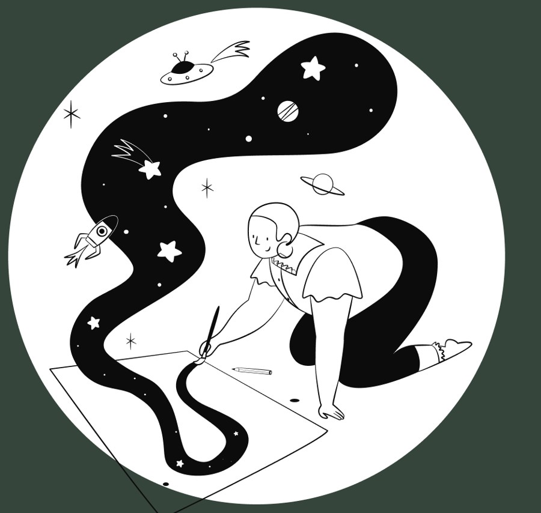
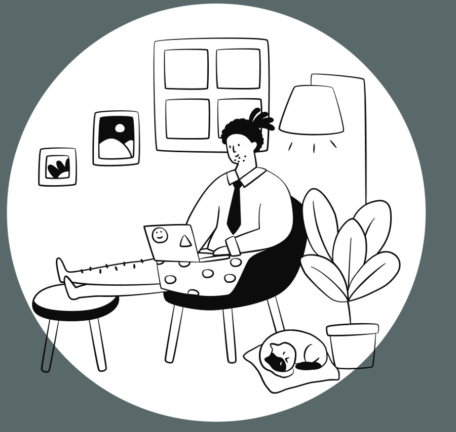

An exploratory mobile-app concept, developed through research, sketches, wireframes and an interactive Figma prototype. An initial browser trial explored choosing tools, writing and returning to notes.
Choose useful components, capture a thought, then return to your notes.
Choose your toolsMake the page your own
In this case study
The starting question
Why is writing so hard to stick to?
I wanted to understand what gets in the way when someone values writing but struggles to start or return to it.
The starting point“I don’t write enough. I know it is good for me, but I still don’t write enough.”
Initial hypothesis
An accessible, pleasant writing tool might help people write more regularly.
Initial challenge
How might I encourage people to write more consistently?
How I defined the problem
Who?
People who want to write or capture their thoughts.
Where?
Writing apps and software.
When?
When starting, returning to notes or using them day to day.
Why explore it?
Writing may offer value, yet some aspects of the experience can put people off.
Original assumptions
Value and motivation
Writing can add value to people’s lives.
Some people face barriers to starting or continuing.
Needs and tools
People have different reasons, formats and priorities.
Digital tools could offer a useful way to capture thoughts.
Explore the full original assumptions
These were the assumptions I took into the research. They were questions to investigate, rather than conclusions.
From the initial hypothesis
Writing is beneficial and adds significant value to people’s lives.
Some people currently find writing inaccessible or unpleasant.
Some people want to write, or write more, but for some reason they don’t.
People want to maintain a writing practice.
From the five whys
Different people have different reasons to write.
Different people have different ways of organising their thoughts at different times.
Styles of writing differ.
Priorities differ.
Additional assumption
Digital writing is an effective writing tool.
Questioning the starting point
Following the five whys
This early reasoning exercise generated possible explanations. The interviews and survey helped me investigate them.
01 / Why?
Writing things down can be beneficial, but it may feel hard to do consistently.
02 / Why?
Writing can feel boring, overwhelming or difficult.
03 / Why?
It may be approached as a task rather than a natural way to organise thoughts.
04 / Why?
A fixed routine, format or standard can feel difficult to achieve consistently.
05 / Why?
People write for different reasons and organise their thoughts in different ways at different times.
Research questions
What do people experience?
The questions focused on value, barriers, changing needs and tool preferences.
Value of writing
What do people gain from writing?
What do they already choose to record?
Barriers & motivation
What stops people who want to write?
Does a regular routine help, or add pressure?
Different needs
How do formats and needs change with the situation?
How do people organise and revisit their thoughts?
Digital or analogue?
What makes handwriting or digital writing comfortable?
What do current tools help with, and where do they fall short?
Learning objectives
Understand what people gain from writing, what stops them, and how their motivations, needs and preferred methods differ.

Research direction
Is writing beneficial?
My starting question assumed writing was valuable. I wanted the participant research to clarify what people gained from it, rather than treat writing more as the goal for everyone.
Existing tools
Different approaches to capturing thoughts
I looked at note-taking, wellbeing and planning tools, alongside analogue writing. The comparison helped me explore different structures and entry points, rather than assume that every writer needed the same diary.
Same customer, similar solution
Instanote · Nototo · Noto · Teria
Note-taking references for starting a note, arranging information and keeping capture approachable.
Simple Thoughts · Thoughts
Related reflection and CBT approaches, considered alongside open-ended writing.
Same customer, other approaches
Pen and paper · Apple and Android notes · Bullet journals · Momento · Pinterest visual journals
Familiar ways to record, plan and collect personal material. Their variety informed the notebook analogy.
Organisation and productivity
Quire · Idea organisers
References for structuring tasks and ideas. In my original notes I had not found a single solution matching the whole concept I was imagining; this was an exploratory review, not an exhaustive market claim.
Explore the original app references
I explored these references in my original desk research. They show different approaches to capturing, organising and reflecting. My notes do not establish a tested list of features each app lacks, so I separate the recorded formats from questions for Elements rather than invent a comparison.
Instanote
Reference: Notes presented as a conversation with yourself.
What I took from it: A familiar chat format can make a short entry feel approachable.
Nototo
Reference: Notes organised on a spatial map, with a visual representation of information.
What I took from it: Organisation does not have to look like a chronological diary.
Simple Thoughts & Thoughts
Reference: The notes describe CBT-style thought review and diary-style entries.
What I took from it: Guided reflection and open writing serve different purposes.
Paper & everyday notes
Reference: Paper, phone notes and a Google-based bullet-journal reference.
What I took from it: Familiar, simple structures are useful starting points.
Pinterest & Momento
Reference: Visual collection and a life-story journal are shown as references.
What I took from it: Images and collected material can sit alongside written entries.
Quire
Reference: A productivity reference that organises ideas and tasks.
What I took from it: Planning is another reason to get information down.
Participant research
Listening to how people write
The survey explored habits and preferences. Five interviews added context about what made writing useful, comfortable or difficult.
Survey94
Responses to the timing and format questions. Other question totals vary.
Interviews5
Participants in individual interviews.
What I wanted to learn
I wanted to understand why people start, stop or return to writing, and the role their tools play in those moments.
Five interview perspectives
I mapped what participants said, thought, did and felt, then grouped pains and gains. These five interviews show different relationships with writing.
Open an interview to explore its maps. Select a map to enlarge it.
Emma
Writing helps her clear her mind and plan. She sometimes wants a routine, but also writes for particular situations. She uses lists and different structures, and prefers a physical notebook.
Emma empathy mapEmma pain and gain map
Sophie
Writing helps her reflect and notice patterns over time. Hand fatigue makes it difficult; she would like to say things aloud and have an app write them out. She also asks for a friendly prompt and a way to keep earlier writing safe.
Sophie empathy mapSophie pain and gain map
Daniel
He finds keeping a diary boring, but uses lists and writes thoughts down when he needs to. He is interested in noticing patterns and likes lists and journals to remain separate.
Daniel empathy mapDaniel pain and gain map
Alex
He records ideas across notebooks, spreadsheets and apps. Writing is an organic process for him. He values spreadsheet cells and headings, but struggles to organise scattered notes and find them again.
Alex empathy mapAlex pain and gain map
Maya
She uses an iPad and her phone for lists, appointments and reflections. Some days she writes two words; other days she uses bullet points. She values crossing off tasks, while a fixed schedule can be hard to maintain.
Maya empathy mapMaya pain and gain map
A closer look
Alex’s notes were already adaptable
Alex used spreadsheet cells, tabs and headings to organise ideas, alongside notebooks and Word. Finding information across those places could be difficult. This example helped me separate writing more from making existing writing easier to use.
Alex’s original interview map. Select the image to enlarge it.
Patterns in these interviews
Value and friction can coexist
Motivation
Writing can offer relief, reflection or a way to organise thoughts. A regular diary does not appeal to everyone.
Comfort
Preferred tools differ. A notebook can feel comfortable for one person, while handwriting creates a physical barrier for another.
Returning to notes
Some participants value noticing patterns or finding earlier ideas. Recording a thought is only part of the experience.
Survey patterns
Five findings that informed the direction
Replotted from the original charts for readability. Question totals vary. Percentages show each chart’s entries, not the percentage of all survey participants.
01
Writing does not happen at one fixed time
41 of 94 timing responses selected spontaneous writing. That encouraged me to allow occasional capture as well as regular writing; it does not mean habits are unhelpful.
When people write
No set time / spontaneous41 (44%)
Evening13 (14%)
Before bed13 (14%)
Whenever I find time13 (14%)
Morning8 (9%)
Other entries6 (6%)
02
Paper is still an important preference
53 of 94 format responses preferred analogue writing, and 34 used both formats. The digital concept needed to respect the familiarity and quietness of paper, rather than assume digital was preferable.
Preferred writing format
Analogue only53 (56%)
Both analogue and digital34 (36%)
Digital only7 (7%)
03
Familiar tools already have a place
29 of 58 app responses named the phone’s built-in notes app. I needed to consider familiar, direct capture, and give people a reason to use a different tool.
Writing apps and tools
Built-in notes app29 (50%)
Mostly write on a computer12 (21%)
Google Keep4 (7%)
Diarly3 (5%)
Google Docs2 (3%)
Other entries8 (14%)
04
Value and hesitation can coexist
53 of 56 responses said writing improved their life. The discouragement chart also recorded procrastination, self-consciousness and worries about someone reading the notes. Those concerns give context to optional support and private access in the concept.
Perceived benefit of writing
Yes53 (95%)
No2 (4%)
In the long run1 (2%)
What discourages writing
Procrastination24 (13%)
Reliving certain things19 (10%)
Someone else reading it17 (9%)
Feeling silly / self-conscious16 (9%)
Lack of time14 (8%)
Other entries94 (51%)
05
Returning to notes has value too
The review chart recorded remembering, seeing progress and noticing patterns. I explored retrieval and review alongside capture; these findings do not establish that an activity dashboard is the best way to help.
What people notice when revisiting writing
Remembering forgotten things58 (28%)
Seeing progress45 (22%)
Noticing patterns37 (18%)
Understanding myself better34 (17%)
More clarity about next steps20 (10%)
Other entries12 (6%)
View survey charts
The original charts are shown below. Totals differ between questions, and some charts combine multiple selections. I use them to describe patterns in this study, rather than make claims about all writers.
Where people writeWriting apps people useHow often people writeComputer writing toolsReasons to continue writingWhat people write aboutWhether writing adds meaningReasons to start writingWhat discourages people from writingWhat people notice when revisiting writingOriginal timing chartOriginal format chart
Synthesis
Making sense of the patterns
I grouped the interview observations into themes, then compared the different relationships people had with writing.
A visual overview of related themes. Bubble sizes aid the layout; they do not represent frequency or importance. Select to enlarge.
Interview patterns
Open an original interview board to see the observations I grouped together. Each board contains several themes.
Creative thinking, memory, organisation, patterns and confidence
Reflection, emotions and self-exploration
Practice, motivation, records and information management
Privacy, accessibility, tools, styles and routine
From these observations, I brought overlapping needs together into six themes. I then used the themes to compare what different writers needed from the same space.
Affinity mapping
01
Confidence
Self-consciousness, perfectionism and feeling blocked can make starting difficult.
02
Flexibility
People use lists, paragraphs, words and different tools depending on the moment.
03
Comfort
Handwriting can be a physical barrier. Preferred tools depend on comfort and familiarity.
04
Motivation
Some want a routine; others write organically and dislike the pressure of a fixed habit.
05
Organisation
Recording thoughts is useful, but finding them again and noticing patterns also matter.
06
Reflection
Participants describe writing as a way to process emotions, explore themselves or feel lighter.
Writer profiles
Different writers. Different priorities
These loose profiles helped me keep contrasting relationships with writing in view. I use them as a check when considering the journey, so regular writers, reluctant writers and practical planners are not forgotten. They do not represent every writer or prove that the concept works for all of them.
Planning and organisation
The Productivity Writer
Uses writing to organise work, appointments and ideas. Wants to find previous notes easily and keep things in order.
Tools Word processors, notes apps, spreadsheets and paper.
Wants to write more
The Uncomfortable Writer
Values writing but struggles to follow through. Physical discomfort, procrastination or self-consciousness can get in the way.
Tools Word processors, notes apps, Google Docs and Google Keep.
Already writes regularly
The Comfortable Writer
Writes daily or almost daily, often to process feelings or explore ideas. Still wants better tools for organising and reviewing writing.
Tools Word processors, notes apps, Daylio, Reflectly and paper.
Habits and tools
Respondents used paper, apps and computer tools. The concept needed to accommodate existing preferences rather than replace them with one fixed format.
Motivations and priorities
Reasons for writing ranged from practical organisation to personal reflection. A single diary routine would not address all of these motivations.
Revisiting the original assumptions
Supported in this research
Barriers go beyond motivation. Starting can be affected by discomfort, overwhelm or self-consciousness.
Needs and formats differ. Practical planning and personal reflection call for different structures.
Digital tools can help some writers. Alternatives to handwriting matter when physical discomfort gets in the way.
Challenged by the interviews
A regular habit is not everyone’s goal. Some participants prefer writing when they need to. This shifted the concept towards flexibility rather than enforcing consistency.
These findings describe this study’s participants; they do not establish that one digital solution will work for everyone.
Reference: the full original assumptions
These are the original assumptions, retained in full for comparison with the findings above. They are not additional conclusions.
From the initial hypothesis
Writing is beneficial and adds significant value to people’s lives.
Some people currently find writing inaccessible or unpleasant.
Some people want to write, or write more, but for some reason they don’t.
People want to maintain a writing practice.
From the five whys
Different people have different reasons to write.
Different people have different ways of organising their thoughts at different times.
Styles of writing differ.
Priorities differ.
Additional assumption
Digital writing is an effective writing tool.
Research to direction
From a habit to a flexible writing space
People were already capturing thoughts. Their goals, formats and barriers differed, so I reconsidered what the app should help them do.
The research shift
From writing regularly to writing in your own way
I realised that a routine was somebody’s goal, but not everybody’s goal. Some people wrote to organise, some to express themselves, and some wanted an easier way to get information down. The same person could also need different tools on different days.
Different purposes
Maya moved between lists, short entries and longer reflections. The format could change with the day.
Direction: Make room for different kinds of input.
I moved from “help people write regularly” to “help people capture their thoughts”. Regular writing can still be a goal, but it doesn’t have to be the goal the app sets for everyone.
Customisation was my proposed response to this variety. Bringing tools together was a further assumption: using several apps does not, on its own, show that someone wants to replace them with one.
Project scope
What does writing mean here?
Talking to people broadened my understanding of writing. A list, a reflection and a spoken thought can serve the same purpose: getting something out of your head and keeping it somewhere you can return to. For Elements, I explored a personal space for capturing thoughts in different ways.
Write or type
A few words, a list or a longer reflection.
Speak and record
Capture a thought aloud, with transcription as a proposed alternative.
Sketch and express
Explore an idea visually when words aren’t the best fit.
Make a quick check-in
Record a mood or habit without needing a paragraph.
Collect inspiration
Keep photos, quotes and supportive words alongside your own notes.
Plan and organise
Use lists, an agenda and dated plans to turn thoughts into practical next steps.
Lists, text, planning and speaking aloud connect to the interviews. Drawing, photos and quick check-ins extend the notebook idea through design exploration.
Defining the core experience
I want the main experience to stay simple: choose useful tools, capture something and find it again. The page can change depending on the person’s needs. Calendar, statistics and community offer support when someone wants it, without setting a routine for everyone.
Design priorities
I combined the interview clusters with survey patterns, then translated recurring needs into these six priorities. The original six findings are available below.
confidence
Confidence before consistency
Perfectionism and self-consciousness can make starting difficult.Design direction: Offer a low-pressure space without a required routine.
How might we help someone begin without pressure to write well or keep a routine?
Design priority: Confidence and a friendly starting point
Flexible formats
How might we let people choose a writing format that suits the moment?
Design priority: Flexibility of format

Familiar structure
How might we combine personal writing and practical planning in a structure people recognise?
Design priority: Familiar structures and organisation

Accessibility
How might we offer a comfortable alternative when handwriting is difficult?
Design priority: Physical comfort and accessibility
Value
How might we help people recognise what writing gives them?
Design priority: Personal value and reflection
Returning to notes
How might we make older writing easier to retrieve and reflect on?
Design priority: Retrieval and returning to notes

View the HMW questions in detail
How might we questionsBarriers that discourage writingParticipant suggestions and barriers
Participant voices behind the opportunities
“I would like a friendly prompt.”
— Interview map: Sophie
A reason to offer a gentle, optional prompt rather than require a daily entry.
“It helps having someone you are accountable to.”
— Maya
A starting point for optional encouragement and learning with others. A community is my proposed response, not a proven need for a social feed.
Noticing patterns in earlier writing
Observation from Maya’s map
This helped me explore review and progress views. It is a mapped observation, rather than a verbatim participant quotation.
The design direction
How might we bring different writing needs into one flexible space, while helping people start and return to their notes?
Design concept
A writing space that adapts
I wanted it to feel like choosing a notebook: minimal, personal and useful for the way someone wants to write.
Stationery references
A quiet page, with room for different arrangements
A stationery shop offers blank pages, dot grids and planners for different purposes. I wanted to explore that choice digitally: include what is useful, remove what is not, and keep the page calm.
A quiet space for writingAn adaptable ring-bound plannerPlans and notes in a weekly diary
A blank beginning
Space without a prescribed format.
A gentle structure
A dot grid for lists, sketches and flexible layouts.
MONTUEWEDTHUFRI
Plans beside notes
A weekly view alongside open writing space.
Original schematic layouts, inspired by analogue notebooks and planners, including Moleskine and Filofax.
Adaptability
Choice, without filling the page
Alex’s adaptable spreadsheet and the variety of analogue stationery helped me imagine a configurable notebook. Someone could choose one tool or several. My own enjoyment of stationery also shaped the idea, so I would need to check whether that choice feels useful to others.
Tools & elements
Choose what belongs on your page
I used earth, air, fire and water as a visual language for organising the tools, not as personality types. The groups describe activities; people can choose across them and change their page later.
Earth
Plan & organise
Practical structures for tasks and plans, without prescribing a single diary format.
A way to notice changing moods and habits, for writers who find tracking useful.
Scale tracker · Habit tracker

Fire
Express & capture
Different ways to capture a thought, including alternatives to handwriting.
Text · Voice recording · Drawing

Water
Reflect & collect inspiration
Personal material and gentle prompts that can make a writing space feel meaningful.
Quotes · Affirmations · Photos

One sheet, different combinations
A task-focused sheet might combine a checklist, agenda and habit tracker. A reflective sheet might bring together text, a mood scale and a photo. These are proposed combinations to explore with users.
Why include each tool?
Hover over a tool to see its element colour. The groupings are my design metaphor, not a fixed or research-derived classification.
The research informed the needs below. Some tools respond directly to interview observations; others are design ideas whose usefulness still needs testing.
Checklists
Maya valued crossing off completed tasks. A checklist offers a small, practical way to record progress.
I explored activity over time as a possible source of encouragement and a way to revisit entries. Progress displays could also create pressure, so they would need testing.
Original activity-review mockup
Community & learning
Maya’s interest in accountability inspired optional connection. Courses, workshops and shared encouragement are further design ideas that would need testing.
The sitemap shows the wider concept. The main writing page remains central; calendar, statistics and community are optional routes, as shown in the journey above.
Proposed user flow
A small beginning, then a reason to return
This is the intended route through the concept, drawn from my original flowchart. It describes proposed interactions, rather than an observed user journey.
Open the app
Sign up or log in. Choose an optional PIN for private writing.
Choose useful tools
Read the tool groups and select one or several components.
Capture something
Use the personal sheet to write, record or collect a first entry.
Find it again
Revisit earlier writing, or use the agenda and calendar for a dated plan.
Return and adapt
Change the tools as needs change. Optional prompts, progress views or learning can offer a reason to return.
Wireframe checkpoints
Choose useful toolsCapture on the sheet
A private place to write
The optional PIN in the original flow explores control over personal writing. Digital access protection is an advantage I wanted to offer alongside the notebook experience; the prototype does not establish how secure a finished app would be.
Explore the original journey and opportunity map
The original flowchart records the wider routes and my anticipated feelings and design opportunities. These were design predictions, not usability-test findings.
Original user journey and design-opportunity flowchart
Select the flowchart to inspect its connections and annotations at full size.
Sketching ideas
Exploring different ways to write
I explored formats, customisation and writing support through these early sketches.
Making practical tools available alongside expressionDifferent types of writing on one sheetPhotos, notes and dated plansPage appearance and gentle writing supportPrompts and reminders without pressureOptional learning and writing workshops
Interface development
Bringing the experience together
The wireframes explored the structure. The final screens developed the notebook-inspired visual language and connected the concept in a Figma prototype.
Low fidelity wireframes
Making the structure tangible
The low-fidelity screens explore component selection, the writing sheet, planning and review before the final visual treatment.
Scroll through the screens or select an image to enlarge it.
Choose the components for your sheetWriting sheet: lists and notes togetherReview habits and mood over timeAgenda: a list of upcoming plansAgenda: a calendar view
The design
From a configurable sheet to everyday use
The final screens show how the proposed experience connects choosing components, writing, planning and returning to earlier entries.
Scroll through the screens or select an image to enlarge it.
Choose the components that suit the momentA personal writing sheet with practical toolsCapture a longer thoughtReturn to plans in an agenda listSee upcoming plans in the calendarReview a week of habits and moodLook across a longer periodExplore a yearly overview
Visual language
The app’s original fonts and colours
Hover over the fonts to see their details.
Headline
Subheading
Title
Subheading
Body
Muted colours
#CCCBB7#D2D4C9#566666#35453B
Accents
#3C31B1#8A80BC#CAE4FF#F0E886#FFC9C9
Neutrals
#000000#2C2C2C#646368#BDBDBD#D6D6D8#F8F8F6
The high fidelity prototype
Test the prototype
Try the original Figma flow from choosing components to a personal writing sheet. This is an interactive design prototype, rather than a functioning recording or transcription app.
I created a functional browser trial to explore choosing tools, entering writing and returning to it. Unlike the Figma prototype, it allowed people to type their own notes and keep them on their device.
What I tested
On their mobile phones, people were asked to select Journal and another tool, write a short note, leave and reopen the trial, find their note, and change their tools.
Questionnaire8
Responses after the mobile trial
Observed sessions3
People observed using the trial
I provided guidance where needed during the observed sessions. The observations add context to the survey findings, not additional questionnaire responses.
Self-reported responses, not independently measured task-completion rates.
Findings and design implications01
Easy to write did not always mean easy to understand
Seven respondents rated writing as easy. However, observations and follow-up comments exposed uncertainty about what an “element” was, how to use the quote tool, and the difference between a checklist and a to-do list. One person did not attempt changing tools, even with guidance.
Next iteration: Start with fewer, more distinct tools. Test plain-language labels and examples, while retaining Elements as the app’s identity.
02
Returning and saving needed clearer signals
Only three respondents rated finding their note again as easy. Seven said their note remained after reopening, but comments still raised uncertainty about autosave and moving between selection and writing. One person also expected access to previous days.
Next iteration: Make the return route and saved state clearer. Investigate how people expect to find earlier entries, then retest with a more precise return task.
03
Combining tools offered value to some people
Five respondents found tools together useful; three did not find them useful for themselves. Six described choosing as simple and two as manageable with effort. This suggests the limited selection task was approachable, but does not establish that customisation improves comfort or creates lasting value.
Next research: Understand which writing situations benefit from combined tools, and compare a simple starting page with a configurable one.
What this round could not establish
The browser trial offered less context than an onboarded app. Leaving and reopening it confused some people, and the “Buy oranges” example made one person question which tool to use. I cannot fully separate test-instruction problems from interface problems in this round. Where a task was not attempted, I cannot draw a conclusion about its usability.
These findings concern a limited trial, not the full Figma concept. They do not establish long-term use, habit formation, accessibility or desktop usability. Additional onboarding is a possibility to test, rather than a proven solution.
What I would carry forward
Keep writing simple. Make the tools and the way back clearer before adding more choices.
What I learned
Support writing without setting everyone’s goal
I began with my own interest in writing more consistently. Listening to people changed the question: they already wrote, but in different ways and for different reasons. Elements explores how a digital notebook could accommodate that variety.
The outcome is a research-led concept, visual prototype and an initial browser trial. Testing shifted my attention from offering more possibilities to making the existing choices easier to understand. I would simplify the starting experience and retest before expanding the concept.
What I would evaluate next
Can people distinguish and choose a smaller set of tools without help?
Can they return to their writing and recognise that it has been saved?
Does a configurable page offer benefits over a simpler starting page?
Which writing needs would benefit from more accessible ways to capture thoughts?
How might the experience translate to desktop use?
Give people the tools they need
I moved from “help people write regularly” to “help people capture their thoughts”. Regular writing can still be a goal, but it doesn’t have to be the goal the app sets for everyone.